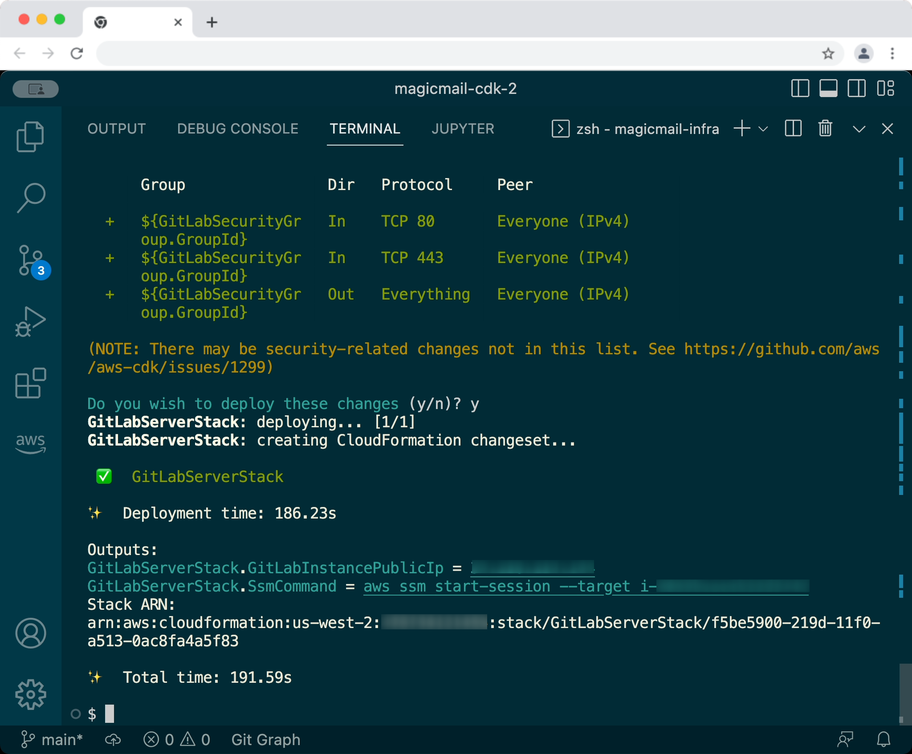
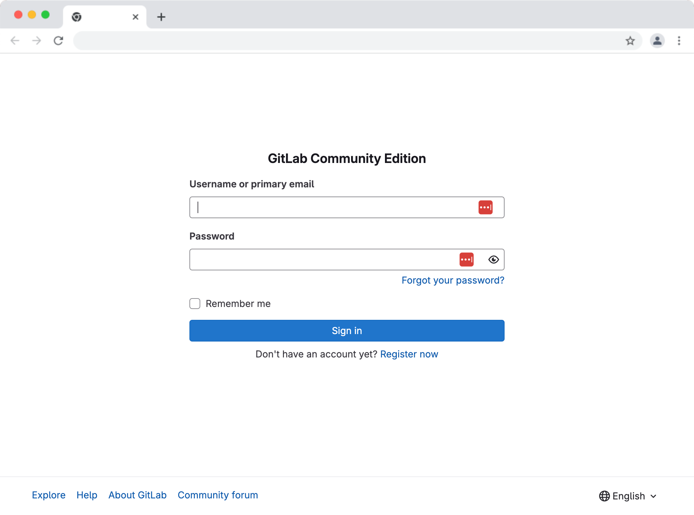
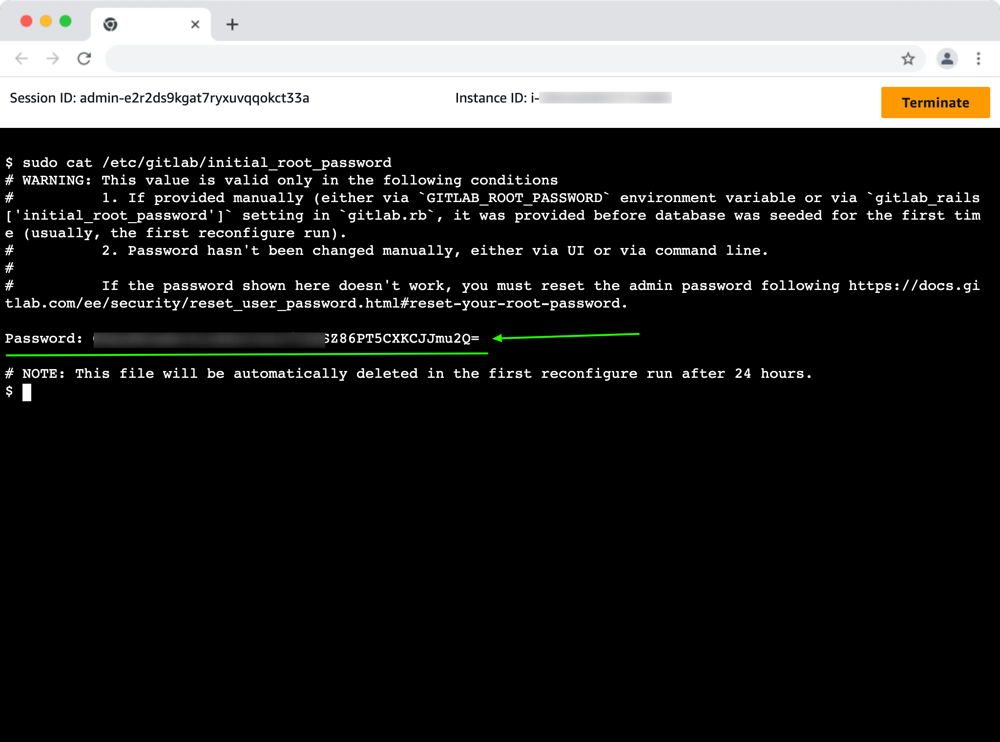
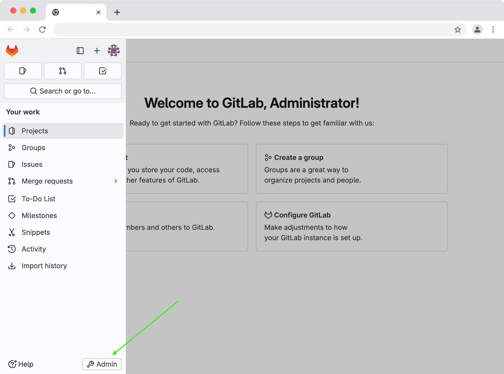
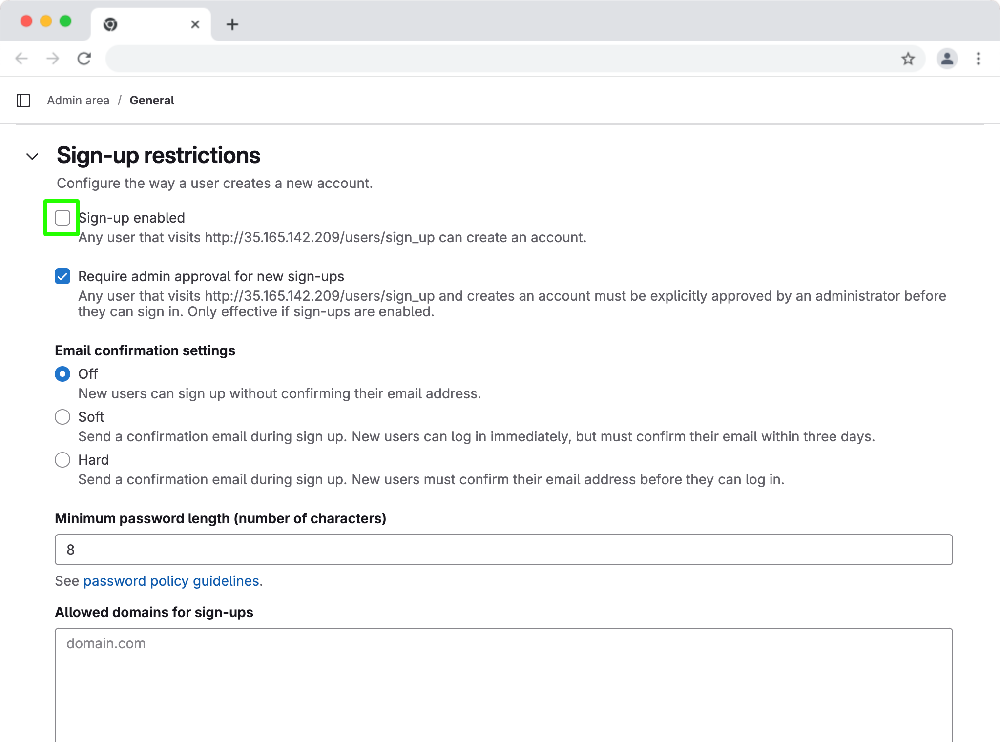
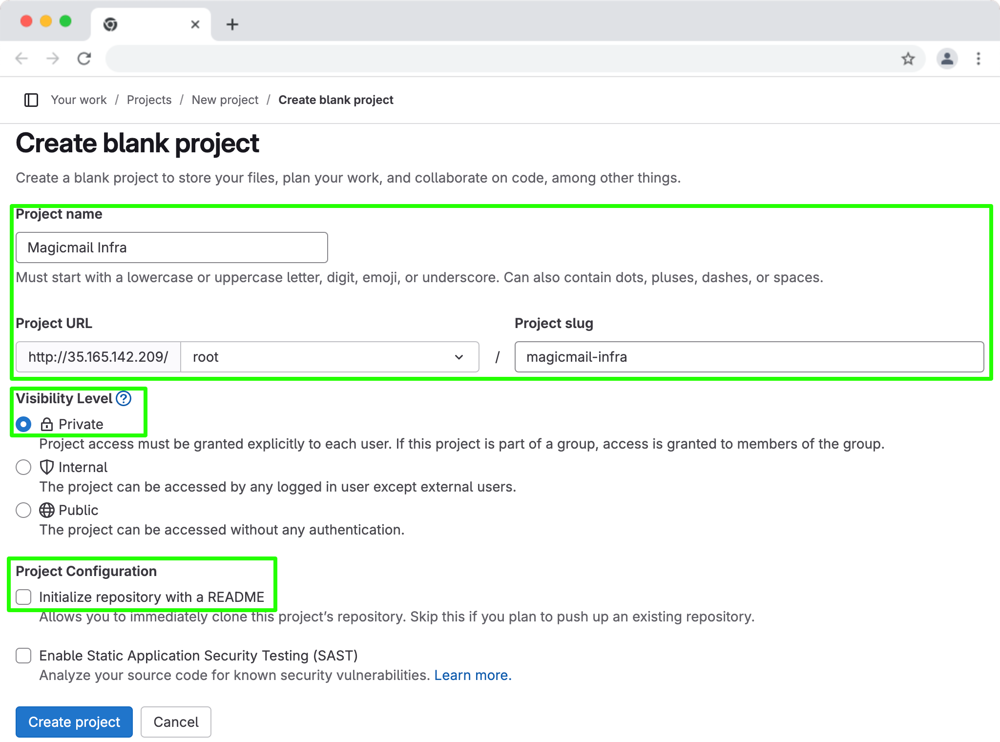
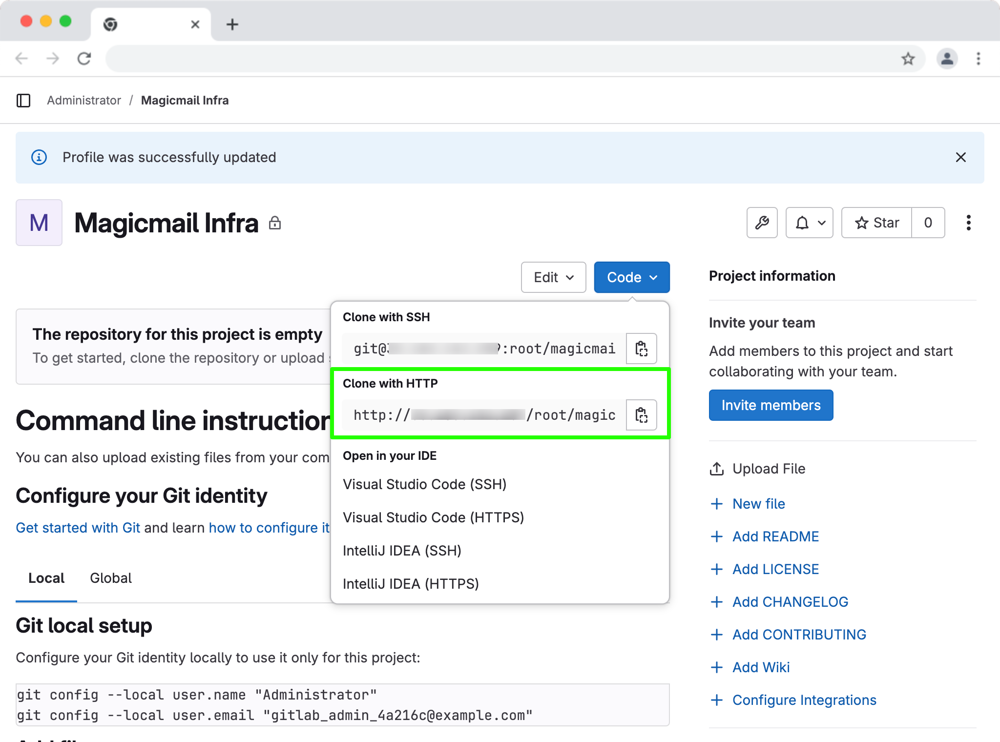
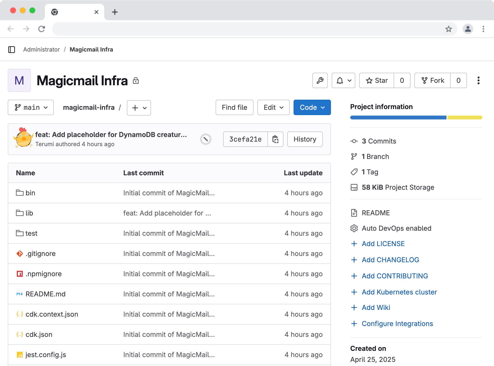

Chapter 2
Introducing GitLab & Setting Up Your Server
Ethan felt a surge of confidence as he looked at his terminal. The git log --oneline --graph command showed a clean history of his work from Chapter 1, safely stored in the .git directory within his magicmail-infra project. No more random backup files! But he knew this was only half the story. His code was still just on his laptop.
"Okay, Maya," he said as their next session began. "I've got my local Git history sorted. How do I back this up somewhere else and start sharing it, like you mentioned?"
Maya smiled. "Excellent question! That brings us to the concept of remote repositories and the platform we'll use for MagicMail: GitLab. Think of GitLab as a central hub for our code – a place to store it securely, collaborate on changes, and eventually automate our entire deployment process."
"Your local Git repository is great for tracking changes on your machine," Maya explained, "but its real power multiplies when you connect it to a remote server. This remote server acts as a central source of truth, a backup, and a platform for teamwork."
What is GitLab?
"There are several popular platforms for hosting Git repositories, like GitHub, Bitbucket, and AWS CodeCommit. For the MagicMail project, and for this book, we're going to use GitLab," Maya stated.
"Why GitLab?" Ethan asked.
"GitLab is a comprehensive DevOps platform delivered as a single application," Maya elaborated. "This means it doesn't just host your Git repositories; it also includes powerful built-in features for the entire software development lifecycle, which are fantastic for managing Infrastructure as Code:"
Source Code Management (SCM): Securely hosts your Git repositories with fine-grained access controls.
Collaboration: Features like Merge Requests (MRs) for code review, issue tracking for managing tasks and bugs, and wikis for documentation.
Continuous Integration/Continuous Deployment (CI/CD): A robust, built-in system for automatically building, testing, and deploying your code (including our CDK infrastructure!) whenever changes are pushed.
Container Registry: Stores Docker images.
Security Scanning: Tools to scan your code and infrastructure for vulnerabilities.
Monitoring & Analytics: Features to observe application and pipeline performance.
"The key advantage is having all these tools integrated into one platform. For our purposes, we'll focus initially on Git repository hosting and collaboration, and then heavily utilize its CI/CD capabilities."
Diagram: GitLab integrates multiple DevOps tools into a single platform.
GitLab.com vs. Self-Hosted GitLab
"GitLab offers two main deployment models:" Maya continued.
GitLab.com (SaaS): This is GitLab's hosted Software-as-a-Service offering. You simply sign up for an account (they have generous free tiers), create your projects, and GitLab manages all the underlying infrastructure for you. This is often the quickest and easiest way to get started, especially for individuals and small teams, and it's what many large organizations use as well.
GitLab Self-Managed (Self-Hosted): GitLab also allows you to install and run the entire GitLab platform on your own infrastructure (on-premises servers or cloud VMs like AWS EC2). This gives you complete control over your instance, data residency, and customization. GitLab offers both a free Community Edition (CE) and paid Enterprise Editions (EE) for self-hosting.
"For many real-world projects, especially starting out, GitLab.com is perfectly suitable," Maya noted. "However, since this book is about learning AWS and CDK..." she grinned, "...we're going to take the more hands-on path for part of this chapter. We'll explore Option 2 and actually use our CDK skills to deploy our own GitLab Community Edition (CE) server on an AWS EC2 instance!"
"Wait, we're deploying GitLab using CDK?" Ethan asked, surprised.
"Exactly! It's a fantastic practical exercise," Maya confirmed. "It reinforces your CDK skills, shows you how to manage more complex application deployments on EC2, and gives you a fully functional GitLab instance to use for the rest of the book's exercises. We'll still cover how to use GitLab.com briefly, as it's a common choice, but the main hands-on part will be deploying our own."
Option 1: Using GitLab.com (The Quick Start)
"If you just want to get going quickly or prefer not to manage your own server, GitLab.com is the way to go," Maya said. "The process is straightforward:"
Sign Up: Go to GitLab.com and create a free account.
Create a Project: Once logged in, click the '+' icon (usually near the top right) and select 'New project/repository'. Choose 'Create blank project'.
Name Your Project: Give your project a name (e.g.,
magicmail-infra), optionally add a description, and decide on the visibility level (Private is recommended for most projects initially). You typically don't need to initialize it with a README if you plan to push your existing local repository from Chapter 1.Get the Repository URL: After creating the project, GitLab will display the repository URL (HTTPS or SSH). You'll need this URL later to add it as a remote to your local Git repository (
git remote add origin <URL>).
 Caption: Creating a new project on GitLab.com.
Caption: Creating a new project on GitLab.com.
"That's essentially it. You'd then follow the steps we'll cover later for adding this URL as a remote to your local repo and pushing your code. GitLab.com handles the server, backups, updates, etc."
Option 2: Self-Hosting GitLab CE with AWS CDK
"Now for the more adventurous route – deploying our own GitLab CE instance using CDK," Maya announced. "This gives us maximum control and is a great way to practice deploying stateful applications on AWS."
Architecture Overview
"Before writing code, let's plan the AWS resources we'll need," Maya sketched on a virtual whiteboard. "We need a virtual server (EC2) with the SSM Agent, network access control (Security Group), persistent storage for GitLab's data (EBS Volume), an IAM Role to grant the necessary permissions for SSM, and a way to install GitLab automatically when the server starts (User Data)."
Diagram: Architecture for self-hosted GitLab CE on AWS EC2.
"Before diving into the code," Maya said, "let's map out what resources we need for our GitLab server."
We'll deploy:
An EC2 instance running Ubuntu 22.04 with SSM access — to host GitLab.
An EBS data volume — to store GitLab's repositories and configuration persistently.
A Security Group — to allow inbound HTTP (80) and HTTPS (443) traffic, but no SSH (we use SSM instead).
An IAM Role — to grant the EC2 instance permissions to use Session Manager securely.
User Data script — to automate GitLab installation during instance launch.
An Elastic IP (EIP) — to give our server a stable public IP address.
"This high-level setup ensures our GitLab server is accessible, secure, and persistent across reboots or instance replacements," Maya summarized.
CDK Implementation Strategy
"To keep things organized," Maya explained, "we won't add the GitLab server resources directly into our existing MagicmailInfraStack. Instead, we'll create a new, dedicated CDK Stack for deploying GitLab. This promotes modularity – the MagicMail application infrastructure and the GitLab server infrastructure are managed separately."
"First, create a new file in your lib directory named gitlab-server-stack.ts. This is where we'll define the resources for our GitLab server. Copy the content below, then save the file."
x// lib/gitlab-server-stack.ts
import * as cdk from 'aws-cdk-lib';import { Construct } from 'constructs';import * as ec2 from 'aws-cdk-lib/aws-ec2';import * as iam from 'aws-cdk-lib/aws-iam';
export class GitLabServerStack extends cdk.Stack { constructor(scope: Construct, id: string, props?: cdk.StackProps) { super(scope, id, props);
// --- VPC --- const vpc: ec2.IVpc = ec2.Vpc.fromLookup(this, 'Vpc', { isDefault: true });
// --- IAM Role for EC2 Instance (for SSM Access) --- const instanceRole = new iam.Role(this, 'GitLabInstanceRole', { assumedBy: new iam.ServicePrincipal('ec2.amazonaws.com'), description: 'IAM Role for GitLab EC2 instance to allow SSM access', }); instanceRole.addManagedPolicy( iam.ManagedPolicy.fromAwsManagedPolicyName('AmazonSSMManagedInstanceCore') );
// --- Security Group --- const gitlabSecurityGroup = new ec2.SecurityGroup(this, 'GitLabSecurityGroup', { vpc: vpc, description: 'Allow HTTP, HTTPS access to GitLab server', allowAllOutbound: true, }); gitlabSecurityGroup.addIngressRule(ec2.Peer.anyIpv4(), ec2.Port.tcp(80), 'Allow HTTP access'); gitlabSecurityGroup.addIngressRule(ec2.Peer.anyIpv4(), ec2.Port.tcp(443), 'Allow HTTPS access');
// --- EBS Volume Definitions --- // Define the device name as a constant - Use NVMe name const dataVolumeDeviceName: string = '/dev/sdf'; const dataVolumeConfig: ec2.BlockDeviceVolume = ec2.BlockDeviceVolume.ebs(100, { volumeType: ec2.EbsDeviceVolumeType.GP3, encrypted: true, deleteOnTermination: false, }); const dataBlockDevice: ec2.BlockDevice = { deviceName: dataVolumeDeviceName, volume: dataVolumeConfig, }; const rootVolumeConfig: ec2.BlockDeviceVolume = ec2.BlockDeviceVolume.ebs(50, { volumeType: ec2.EbsDeviceVolumeType.GP3, encrypted: true, }); const rootBlockDevice: ec2.BlockDevice = { deviceName: '/dev/sda1', // Common root device name for Ubuntu AMIs volume: rootVolumeConfig, };
// --- EC2 Instance --- const userData = ec2.UserData.forLinux(); const gitlabMountPoint: string = '/var/opt/gitlab'; userData.addCommands( 'echo "--- Formatting and Mounting Data Volume ---"', // Wait for NVMe devices to initialize (up to 60 seconds) 'for i in {1..60}; do [ -e /dev/nvme1n1 ] && break || sleep 1; done', // Find EBS volume using persistent symlink 'DATA_DEVICE=$(realpath /dev/disk/by-id/nvme-Amazon_Elastic_Block_Store_*)', '[ -b "$DATA_DEVICE" ] || DATA_DEVICE="/dev/nvme1n1"', 'if [ -b "$DATA_DEVICE" ]; then', ' echo "Found EBS volume at $DATA_DEVICE"', // Check filesystem ' if ! blkid $DATA_DEVICE; then', ' echo "Formatting $DATA_DEVICE with ext4"', ' mkfs -t ext4 -q $DATA_DEVICE', ' fi', // Create mount point ` mkdir -p ${gitlabMountPoint}`, // Get UUID and update fstab ' UUID=$(blkid -s UUID -o value $DATA_DEVICE)', ` echo "UUID=$UUID ${gitlabMountPoint} ext4 defaults,nofail,noatime 0 2" | tee -a /etc/fstab`, // Mount and set permissions ` mount ${gitlabMountPoint}`, ' chown git:git ${gitlabMountPoint}', ' chmod 755 ${gitlabMountPoint}', 'else', ' echo "ERROR: EBS volume not found! Using root volume"', ` mkdir -p ${gitlabMountPoint}`, 'fi', // GitLab installation continues... 'echo "--- Installing Dependencies & Setting up GitLab Repo ---"', 'export DEBIAN_FRONTEND=noninteractive', 'apt-get update -y', 'apt-get install -y curl ca-certificates tzdata perl', 'curl -L https://packages.gitlab.com/install/repositories/gitlab/gitlab-ce/script.deb.sh | bash', 'apt-get clean', 'echo "--- Starting GitLab CE Installation ---"', 'PUBLIC_IP=$(curl -s http://169.254.169.254/latest/meta-data/public-ipv4 || echo "127.0.0.1")', `EXTERNAL_URL="http://$PUBLIC_IP" apt-get install -y gitlab-ce`, 'echo "--- Post-Install Configuration ---"', 'gitlab-ctl reconfigure' );
const ubuntuAmi = ec2.MachineImage.lookup({ name: 'ubuntu/images/hvm-ssd/ubuntu-jammy-22.04-amd64-server-*', owners: ['099720109477'], });
const instance = new ec2.Instance(this, 'GitLabInstance', { vpc: vpc, instanceType: ec2.InstanceType.of(ec2.InstanceClass.T3, ec2.InstanceSize.LARGE), machineImage: ubuntuAmi, securityGroup: gitlabSecurityGroup, role: instanceRole, vpcSubnets: { subnetType: ec2.SubnetType.PUBLIC }, blockDevices: [rootBlockDevice, dataBlockDevice], userData: userData, });
// --- Elastic IP --- START ADDITION --- // Allocate an Elastic IP address const elasticIp = new ec2.CfnEIP(this, 'GitLabEIP');
// Associate the Elastic IP with the EC2 instance using AllocationId new ec2.CfnEIPAssociation(this, 'GitLabEIPAssociation', { allocationId: elasticIp.attrAllocationId, // <-- Use AllocationId attribute instanceId: instance.instanceId, }); // --- Elastic IP --- END ADDITION ---
// --- Outputs --- // Output the Elastic IP address instead of the dynamic public IP new cdk.CfnOutput(this, 'GitLabInstancePublicIp', { // Keep the Output name the same for consistency value: elasticIp.ref, // Output the EIP address description: 'Static Public IP (Elastic IP) of the GitLab EC2 instance', }); new cdk.CfnOutput(this, 'SsmCommand', { value: `aws ssm start-session --target ${instance.instanceId}`, description: 'Command to connect via SSM Session Manager', }); }}
"Okay, let's review the complete GitLabServerStack definition we just created:" Maya summarized.
EC2 Instance: This is the core virtual server.
Operating System: We'll use Ubuntu 22.04 LTS, a Linux distribution well-supported by GitLab. The specific Amazon Machine Image (AMI) we choose must include the AWS SSM Agent for secure access.
Instance Type: GitLab recommends specific minimum resources (CPU and RAM). We'll start with a
t3.largeinstance type (2 vCPU / 8 GiB RAM).Root Volume: The primary disk for the operating system. We'll explicitly set this to 50 GiB to ensure enough space for the OS, Docker images (used by the runner later), and temporary files from package installations.
IAM Role/Instance Profile: The instance needs permissions to interact with AWS services, specifically SSM. We'll attach an IAM role with the
AmazonSSMManagedInstanceCorepolicy.
EBS Volume (Data Volume): A separate, persistent 100 GiB
gp3disk for GitLab's application data.Persistence: Configured with
deleteOnTermination: false.Encryption: Enabled.
Mount Point: Formatted and mounted at
/var/opt/gitlabby the User Data script.
Security Group: Firewall allowing inbound HTTP (80) and HTTPS (443) from anywhere (
0.0.0.0/0). Allows all outbound traffic. No SSH port is opened.User Data Script: Automates instance setup on first boot:
Formats (if needed) and mounts the data EBS volume at
/var/opt/gitlab.Installs dependencies (
curl,ca-certificates, etc.) viaapt-get.Adds the GitLab CE package repository using
script.deb.sh.Cleans the
aptcache (apt-get clean).Installs
gitlab-ceviaapt-get, settingEXTERNAL_URLbased on the instance's public IP.Cleans the
aptcache again.
IAM Role / Instance Profile: Grants EC2 permission to use SSM (
AmazonSSMManagedInstanceCorepolicy).Elastic IP (EIP): A static public IPv4 address associated with the EC2 instance, ensuring the access IP remains constant.
(Optional but Recommended for Production): DNS, HTTPS certificates, S3 backups.
"This completes the definition of the GitLabServerStack. The next step would be to instantiate this stack in our main application file (bin/magicmail-infra.ts) and then deploy it."
Instantiating and Deploying the GitLab Stack
"Now that we have the GitLabServerStack class defined, we need to tell our CDK application to actually create an instance of it," Maya explained.
Updating the App Entrypoint
"Open your main application entrypoint file, bin/magicmail-infra.ts. We need to import our new stack class and then create an instance of it, just like we did for the original MagicmailInfraStack."
xxxxxxxxxximport 'source-map-support/register';import * as cdk from 'aws-cdk-lib';import { MagicmailInfraStack } from '../lib/magicmail-infra-stack';import { GitLabServerStack } from '../lib/gitlab-server-stack'; // <-- Import the new stack
const app = new cdk.App();
// Define the environment (account/region) - reuse for both stacks// Ensure these environment variables are set in your terminal or CI/CD environment// OR replace with explicit { account: 'YOUR_ACCOUNT_ID', region: 'YOUR_REGION' }const deploymentEnv = {account: process.env.CDK_DEFAULT_ACCOUNT,region: process.env.CDK_DEFAULT_REGION};
// Instantiate the original MagicMail stack (from Book 1)new MagicmailInfraStack(app, 'MagicmailInfraStack', {env: deploymentEnv,description: 'Stack for MagicMail core infrastructure (e.g., S3 bucket)'});
// Instantiate the new GitLab Server stacknew GitLabServerStack(app, 'GitLabServerStack', {env: deploymentEnv,description: 'Stack for deploying the self-hosted GitLab CE server'});
// Optional: Add tags to all stacks within the appcdk.Tags.of(app).add('Project', 'MagicMailBook');"See?" Maya pointed out. "We import GitLabServerStack and then create a new instance: new GitLabServerStack(...). We give it a unique ID within the app ('GitLabServerStack') and pass the same deploymentEnv so it deploys to the same AWS account and region as our other stack. We also added a description for clarity."
"Regarding the deploymentEnv definition," Maya added, "using process.env.CDK_DEFAULT_ACCOUNT and REGION, as we configured it in Book 1, is a flexible approach. It allows the CDK to automatically determine the target account and region based on your configured AWS profile (either the default one or a named profile set via the AWS_PROFILE environment variable, as we'll discuss next). This makes the code more portable than hardcoding account IDs or relying solely on cdk.json context, while ensuring the stacks are environment-aware, which unlocks certain CDK features."
"Also notice the cdk.Tags.of(app).add(...) line," Maya continued. "Tagging resources wasn't a focus in Book 1, but it's a critical best practice in AWS. Tags (key-value pairs) help immensely with organizing resources, tracking costs via AWS Cost Explorer, setting up automation, and even controlling access. Applying tags at the App level like this is convenient because CDK often propagates these tags automatically to the underlying resources created within the stacks."
Confirming AWS Access and Profile Usage
"Before any deployment, it's crucial to confirm you're interacting with the correct AWS account, especially if you manage multiple accounts." Maya advised. "We can use the AWS CLI for this, and it's also the perfect time to talk about AWS CLI Profiles."
"If you only use one AWS account, running aws configure (as you did in Book 1) sets up your default profile. But if you work with multiple accounts (like a personal account and a work account, or different project accounts), using named profiles is essential."
"Let's assume you have credentials (Access Key ID and Secret Access Key) for the specific AWS account you want to use for this book's exercises. We can create a dedicated profile for it, let's call it magicmail-dev:"
xxxxxxxxxx# Run this command and follow the promptsaws configure --profile magicmail-dev"It will ask for:
AWS Access Key ID: [Enter the key ID for your book project user]
AWS Secret Access Key: [Enter the secret key for your book project user]
Default region name: [Enter your desired region, e.g.,
us-east-1]Default output format: [Enter
json]
"This saves the credentials and settings under the name magicmail-dev in your AWS configuration files (~/.aws/credentials and ~/.aws/config). Now, you can explicitly tell AWS CLI commands which profile to use."
"Let's verify the identity associated with our new profile:"
xxxxxxxxxxaws sts get-caller-identity --profile magicmail-devxxxxxxxxxxOutput:{"UserId": "AIXXXXXXXXXX5X6XX3XXX","Account": "012345678901","Arn": "arn:aws:iam::012345678901:user/mm-dev"}Caption: Verifying AWS identity using a specific profile.
"Make sure the Account and UserId shown match the AWS account and IAM user you intend to deploy with. If you just have the one default profile configured, you can omit the --profile flag."
"Now, how does CDK know which profile to use?" Maya continued. "The most common way is to set the AWS_PROFILE environment variable in your terminal before running CDK commands:"
xxxxxxxxxx# For Linux/macOS:export AWS_PROFILE=magicmail-dev
# For Windows (Command Prompt):# set AWS_PROFILE=magicmail-dev
# For Windows (PowerShell):# $env:AWS_PROFILE="magicmail-dev""Set this environment variable in your current terminal session. Now, any subsequent AWS CLI or CDK commands in this terminal session will use the magicmail-dev profile credentials and settings."
Deploying the Stack
"Alright, with the correct profile configured and exported, let's deploy just the new GitLab stack," Maya instructed.
xxxxxxxxxx# Ensure AWS_PROFILE is set if using a named profile# Then run deploy:npx cdk deploy GitLabServerStack"CDK will now perform the following using the credentials from your selected profile:
Synthesize: Compile your TypeScript code and generate the CloudFormation template for
GitLabServerStack.Diff (Optional): It might show you the resources that will be created (EC2 instance, IAM Role, Security Group, EBS Volume).
Security Changes Prompt: Because we're creating an IAM Role (
GitLabInstanceRole), CDK will likely pause and ask you to confirm that you want to deploy these security-related changes. Review the changes listed and typeyto approve if they look correct.Deploy: CDK will use CloudFormation to create the resources defined in the stack.
 Caption: Deploying the GitLabServerStack and confirming IAM changes.
"Patience is key here!" Maya emphasized. "Creating the resources is relatively quick, but the User Data script that installs GitLab CE inside the EC2 instance can take a significant amount of time – easily 10-20 minutes or even longer, depending on the instance type and current GitLab package size. The cdk deploy command will finish once the CloudFormation stack creation is complete, but GitLab itself might still be installing in the background on the instance."
"Once the deployment command finishes successfully, it will display the Outputs we defined:"
xxxxxxxxxxOutput:GitLabServerStack.GitLabInstancePublicIp = 12.34.56.78GitLabServerStack.SsmCommand = aws ssm start-session --target i-0abcdef1234567890"Make a note of these outputs, especially the Public IP."
Initial Verification
"After cdk deploy finishes, wait patiently for about 15-20 minutes to give GitLab time to install and start," Maya advised.
Check CloudFormation: You can go to the AWS Management Console -> CloudFormation and check that the
GitLabServerStackstatus isCREATE_COMPLETE.Access GitLab Web UI: Open a web browser and navigate to
http://<YOUR_INSTANCE_PUBLIC_IP>(using the IP address from the CDK output).First Login / Password Retrieval:
Scenario A (Expected First Run): If this is the first successful boot with a clean data volume, you should be redirected to a page asking you to set the initial password for the administrator user (username
root). Set a strong password and store it securely!Scenario B (Password Already Set): If you see the standard GitLab login page instead, it likely means GitLab's initial configuration completed on a previous boot using the persistent EBS volume. In this case, GitLab automatically generated an initial root password. To retrieve it:
 Caption: GitLab login screen
Connect to the instance using SSM Session Manager via the AWS CLI (using the
SsmCommandoutput fromcdk deployand your configured AWS profile):xxxxxxxxxx# Example: aws ssm start-session --target i-0abcdef1234567890 --profile magicmail-devOnce connected to the instance's shell, view the temporary password file:
xxxxxxxxxxsudo cat /etc/gitlab/initial_root_passwordCopy the displayed password (it might be long and complex). Note that this file may be automatically deleted after 24 hours.
 Caption: Retrieving the initial root password via SSM Session Manager.
Login:
Go back to the GitLab web UI.
Log in with username
rootand the password (either the one you set in Scenario A or the one you retrieved in Scenario B).Important: Once logged in for the first time, immediately go to your user settings (expand the sidebar menu on the left -> Password) and change the root password to something secure that you will remember.
"If you can successfully log in, congratulations! You've successfully deployed and accessed your self-hosted GitLab CE instance using AWS CDK," Maya beamed. "If the web UI doesn't load after 20-30 minutes, or if you encounter issues retrieving/using the initial password, use SSM Session Manager again to check the logs (/var/log/cloud-init-output.log or logs in /var/log/gitlab/) for errors."
Initial GitLab Server Configuration
"Now that you're logged into your self-hosted GitLab instance as the root user, there are a couple of important initial configuration steps we should take, especially for security," Maya advised.
Access Admin Area: Click the Wrench icon (Admin Area) in the top navigation bar. This area allows you to configure instance-wide settings.
 Caption: Admin Area with Wrench icon.
Disable New Sign-ups: Since this is your private GitLab instance for the book exercises (and potentially small projects), you generally don't want random people signing up for accounts.
In the Admin Area sidebar, navigate to Settings -> General.
Expand the Sign-up restrictions section.
Uncheck the box labeled Sign-up enabled.
Scroll down and click Save changes.

Caption: Disabling new user sign-ups in GitLab Admin Area.
"This ensures only you (as the root user) can create new accounts if needed later."
"There are many other settings you could configure," Maya added, "like setting up email notifications (which requires configuring SMTP settings), integrating external authentication, customizing appearance, etc. But for now, disabling sign-ups is the most critical one. We can explore other settings later if needed."
Connecting Your Local Repository to Self-Hosted GitLab
"Okay, Ethan, the moment we've been building towards!" Maya said enthusiastically. "Let's connect the local magicmail-infra Git repository (the one we initialized and worked on in Chapter 1) to a new project on our self-hosted GitLab server."
Creating a Project in GitLab
"First, we need an empty project on the GitLab server to push our code into."
Navigate: In the GitLab UI (make sure you're logged in as
root), click the '+' icon in the top navigation bar and select New project/repository.Create Blank Project: Choose the Create blank project option.
Project Details:
Project name: Enter
magicmail-infra. GitLab will automatically suggest a 'Project slug' (used in URLs) based on this, which is usually fine.Pick a group or namespace: Select 'root'.
Visibility Level: Keep it as Private for now. This means only you (and users you explicitly grant access to later) can see the project.
Project Configuration: Uncheck the box for "Initialize repository with a README". We want an empty project because we're going to push our existing repository history from Chapter 1.
Click Create project.
 Caption: Creating the empty 'magicmail-infra' project on the self-hosted GitLab server.
Adding the Remote
"GitLab will now show you the project page, which is currently empty," Maya explained. "It usually provides instructions, including the repository URLs. We need the HTTPS URL."
Copy HTTPS URL: Find the HTTPS URL for your new project. It will look something like
http://<YOUR_INSTANCE_PUBLIC_IP>/root/magicmail-infra.git. Copy this URL.
 Caption: Copying the HTTPS repository URL from the GitLab project page.
Open Terminal: Go back to your local terminal window. Make sure you are inside your local
magicmail-infraproject directory (the one containing your.gitfolder from Chapter 1).Add Remote: Use the
git remote addcommand to link your local repository to the remote GitLab server. We'll name the remoteorigin(the standard convention for the primary remote). Replace<YOUR_GITLAB_HTTPS_URL>with the URL you just copied.xxxxxxxxxx# Example: git remote add origin [http://12.34.56.78/root/magicmail-infra.git](http://12.34.56.78/root/magicmail-infra.git)git remote add origin <YOUR_GITLAB_HTTPS_URL>Verify Remote: Check that the remote was added correctly:
xxxxxxxxxxgit remote -vThis should show
originlisted with the correct fetch and push URLs.
Finalizing Chapter 1 Repository Setup
Pushing Your Code
"Now that the remote is configured, let's push our existing local history (the main branch and the chapter-1-end tag) to GitLab," Maya instructed.
Push Main Branch: Use the
git push -u origin maincommand we discussed earlier. The-usets the upstream tracking link.xxxxxxxxxxgit push -u origin mainAuthentication: Since you are pushing to your own server over HTTP (not HTTPS with a trusted certificate yet), Git might prompt you for a username and password. Use
rootfor the username and the password you set for therootuser in GitLab. (Note: For more secure and convenient authentication later, setting up SSH keys or personal access tokens is recommended, but username/password works for now).
Push Tag: Push the tag you created at the end of Chapter 1:
xxxxxxxxxxgit push origin chapter-1-end
Verify Push in GitLab
"Finally, go back to your web browser and refresh the magicmail-infra project page on your GitLab server," Maya said. "The 'empty project' message should be gone, replaced by your code files, commit history, and the chapter-1-end tag should be visible under Repository -> Tags!"
 Caption: Verifying the code has been successfully pushed to the GitLab project.
"Success! Your local Git repository is now backed up and connected to your self-hosted GitLab server. This completes the setup phase. In the next chapter, we'll start using GitLab for actual collaboration workflows, like creating issues and merge requests."
Tagging the End of Chapter 2
"Before we wrap up, let's commit the changes we made in Chapter 2, and tag the current state of our main branch to mark the end of Chapter 2," said Maya.
Ensure main is Up-to-Date: Make sure you are on the main branch locally and commit and push all the changes we made in this chapter:
xxxxxxxxxxgit switch maingit add .git commit -m "feat: Add GitLab server deployment stack (End of Chapter 2)"git push origin mainCreate Local Tag: Create the tag pointing to the latest commit on
main:xxxxxxxxxxgit tag chapter-2-endPush Tag: Push this new tag to the remote GitLab server (
origin):xxxxxxxxxxgit push origin chapter-2-end
Wrapping Up Chapter 2
"Big milestone today, Ethan," Maya said. "You didn't just learn GitLab — you deployed your own GitLab server with CDK and AWS. That’s real-world infrastructure in action."
"Now your code isn't just stored locally; it's backed up remotely, ready for collaboration, and managed with professional-grade tooling."
Maya nodded thoughtfully. "With GitLab in place, you're set up for more than just version control. You're ready for collaboration, automation, and scaling your project properly."
"In the next chapter, we'll start managing your infrastructure code inside GitLab — learning how issues, branches, and merge requests create a professional development workflow."
Ethan's Homework
"To get more comfortable with your new GitLab server and reinforce the connection:" Maya suggested.
Explore Admin: Log in as
rootand briefly explore the different sections within the Admin Area (wrench icon). Don't change any settings other than the sign-up restriction we already disabled, just get a feel for what's available.Create Test Project: Create another new blank project in GitLab named
my-test-project. Make it private.Clone Test Project: On your local machine (outside your
magicmail-infradirectory), usegit clonewith the HTTPS URL ofmy-test-projectto clone the empty project. You'll likely be prompted for yourrootusername and password again.Add & Push File:
cdinto the newmy-test-projectdirectory locally. Create a simple text file (e.g.,echo "Hello GitLab" > test.txt). Usegit add .,git commit -m "Add test file", andgit push origin mainto push the file to your GitLab server. Verify it appears in themy-test-projectUI.(Optional) SSM Connect: Practice connecting to your GitLab EC2 instance using the
SsmCommandoutput fromcdk deploy. Once connected, runsudo gitlab-ctl statusjust to see the output confirming services are running. Typeexitto disconnect.
Key Takeaways
GitLab is an integrated DevOps platform offering SCM, CI/CD, issue tracking, and more.
GitLab can be used via the SaaS offering (GitLab.com) or self-hosted (CE/EE).
AWS CDK can be used to provision the infrastructure (EC2, EBS, SG, IAM Role) for a self-hosted GitLab CE instance.
Using SSM Session Manager provides secure shell access to EC2 instances without opening SSH ports, relying on IAM permissions instead.
Persistent data for stateful applications on EC2 requires EBS volumes configured with
deleteOnTermination: false.EC2 User Data scripts automate instance bootstrapping tasks like package installation (using
apt-getfor Ubuntu).AWS CLI profiles help manage credentials for multiple AWS accounts. Setting the
AWS_PROFILEenvironment variable directs CDK and AWS CLI commands.Tagging AWS resources (
cdk.Tags.of(app).add(...)) is crucial for cost tracking, organization, and automation.Local Git repositories are connected to remotes using
git remote add <name> <url>.Code and tags are sent to remotes using
git push <remote-name> <branch-name>andgit push <remote-name> <tag-name>.
Looking Ahead
With Git fundamentals covered and a GitLab instance (self-hosted or GitLab.com) set up and connected, Chapter 3 will focus on leveraging GitLab for effective collaboration on our magicmail-infra CDK project. Ethan and Maya will explore creating issues to track work, using feature branches for development, and managing code reviews through GitLab's Merge Request workflow.
Key Services & Concepts Introduced
AWS Services:
AWS EC2 (Elastic Compute Cloud): Used to provision the virtual server hosting GitLab CE.
AWS EBS (Elastic Block Store): Used to provide persistent block storage for GitLab data.
AWS IAM (Identity and Access Management): Used to create a Role (
GitLabInstanceRole) and attach a Managed Policy (AmazonSSMManagedInstanceCore) granting permissions for SSM Session Manager.AWS Systems Manager (SSM) Session Manager: Used as the secure method for accessing the EC2 instance shell, replacing the need for SSH.
Other Concepts & Tools:
GitLab: Introduced as an integrated DevOps platform (SCM, CI/CD, etc.). Compared GitLab.com (SaaS) vs. Self-Hosted CE. Performed basic server configuration.
Self-Hosting Applications: Used GitLab CE as an example of deploying a stateful application on EC2 infrastructure provisioned via CDK.
AWS CLI Profiles: Explained the use of named profiles for managing credentials for different AWS accounts/roles.
Resource Tagging: Introduced the concept and benefits of tagging AWS resources using CDK.